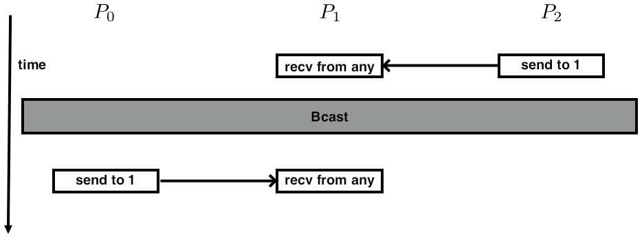
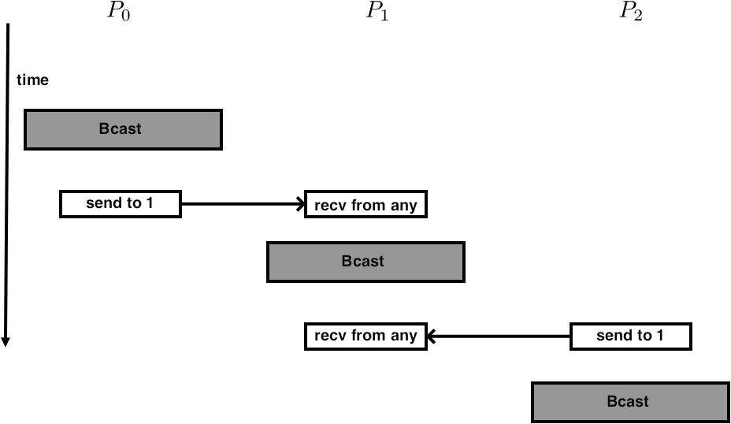
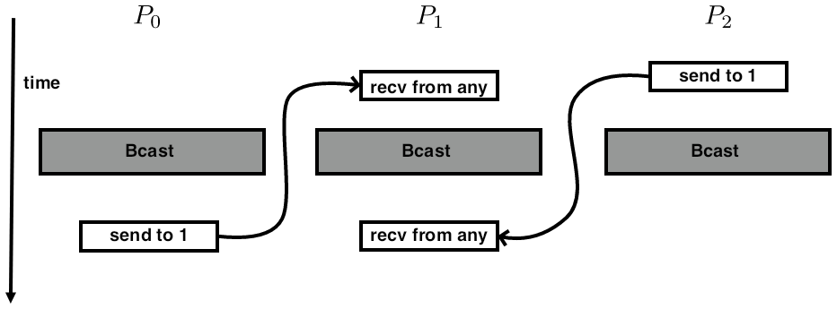

A certain class of MPI routines are called `collective', or more correctly: `collective on a communicator'. This means that if process one in that communicator calls that routine, they all need to call that routine. In this chapter we will discuss collective routines that are about combining the data on all processes in that communicator, but there are also operations such as opening a shared file that are collective, which will be discussed in a later chapter.
crumb trail: > mpi-collective > Working with global information
If all processes have individual data, for instance the result of a local computation, you may want to bring that information together, for instance to find the maximal computed value or the sum of all values. Conversely, sometimes one processor has information that needs to be shared with all. For this sort of operation, MPI has collectives .
There are various cases, illustrated in figure~ 3.1 ,
FIGURE 3.1: The four most common collectives
which you can (sort of) motivate by considering some classroom activities:
This story is a little different from what happens with MPI processes, because these are more symmetric; the process doing the reducing and broadcasting is no different from the others. Any process can function as the root process in such a collective.
How would you realize the following scenarios with MPI collectives?
Think about time and space complexity of your suggestions.
crumb trail: > mpi-collective > Working with global information > Practical use of collectives
Collectives are quite common in scientific applications. For instance, if one process reads data from disc or the commandline, it can use a broadcast or a gather to get the information to other processes. Likewise, at the end of a program run, a gather or reduction can be used to collect summary information about the program run.
However, a more common scenario is that the result of a collective is needed on all processes.
Consider the computation of the standard deviation : \[ \sigma = \sqrt{\frac1{N-1} \sum_i^N (x_i-\mu)^2 } \qquad\hbox{where}\qquad \mu = \frac{\sum_i^Nx_i}N \] and assume that every process stores just one $x_i$ value.
\[ y- (x^ty)x \] Eijkhout:IntroHPC .
%% // compute local value %% localvalue = innerproduct( x[ localpart], y[ localpart ] ); %% // compute inner product on the every process %% AllReduce( localvalue, reducedvalue ); %%
crumb trail: > mpi-collective > Working with global information > Synchronization
Collectives are operations that involve all processes in a communicator. %%(See section for an informal listing.) A collective is a single call, and it blocks on all processors, meaning that a process calling a collective cannot proceed until the other processes have similarly called the collective.
That does not mean that all processors exit the call at the same time: because of implementational details and network latency they need not be synchronized in their execution. However, semantically we can say that a process can not finish a collective until every other process has at least started the collective.
In addition to these collective operations, there are operations that are said to be `collective on their communicator', but which do not involve data movement. Collective then means that all processors must call this routine; not to do so is an error that will manifest itself in `hanging' code. One such example is MPI_File_open .
crumb trail: > mpi-collective > Working with global information > Collectives in MPI
We will now explain the MPI collectives in the following order.
There are more collectives or variants on the above.
Finally, there are some advanced topics in collectives.
crumb trail: > mpi-collective > Reduction
crumb trail: > mpi-collective > Reduction > Reduce to all
Above we saw a couple of scenarios where a quantity is reduced, with all proceses getting the result. The MPI call for this is
C: int MPI_Allreduce(const void* sendbuf, void* recvbuf, int count, MPI_Datatype datatype, MPI_Op op, MPI_Comm comm) Semantics: IN sendbuf: starting address of send buffer (choice) OUT recvbuf: starting address of receive buffer (choice) IN count: number of elements in send buffer (non-negative integer) IN datatype: data type of elements of send buffer (handle) IN op: operation (handle) IN comm: communicator (handle) Fortran: MPI_Allreduce(sendbuf, recvbuf, count, datatype, op, comm, ierror) TYPE(*), DIMENSION(..), INTENT(IN) :: sendbuf TYPE(*), DIMENSION(..) :: recvbuf INTEGER, INTENT(IN) :: count TYPE(MPI_Datatype), INTENT(IN) :: datatype TYPE(MPI_Op), INTENT(IN) :: op TYPE(MPI_Comm), INTENT(IN) :: comm INTEGER, OPTIONAL, INTENT(OUT) :: ierror Python native: recvobj = MPI.Comm.allreduce(self, sendobj, op=SUM) Python numpy: MPI.Comm.Allreduce(self, sendbuf, recvbuf, Op op=SUM) MPL: templatevoid mpl::communicator::allreduce ( F, const T &, T & ) const; ( F, const T *, T *, const contiguous_layout< T > & ) const; ( F, T & ) const; ( F, T *, const contiguous_layout< T > & ) const; F : reduction function T : type
Example: we give each process a random number, and sum these numbers together. The result should be approximately $1/2$ times the number of processes.
// allreduce.c
float myrandom,sumrandom;
myrandom = (float) rand()/(float)RAND_MAX;
// add the random variables together
MPI_Allreduce(&myrandom,&sumrandom,
1,MPI_FLOAT,MPI_SUM,comm);
// the result should be approx nprocs/2:
if (procno==nprocs-1)
printf("Result %6.9f compared to .5\n",sumrandom/nprocs);
Or:
MPI_Count buffersize = 1000; double *indata,*outdata; indata = (double*) malloc( buffersize*sizeof(double) ); outdata = (double*) malloc( buffersize*sizeof(double) ); MPI_Allreduce_c(indata,outdata,buffersize,MPI_DOUBLE,MPI_SUM,MPI_COMM_WORLD);
crumb trail: > mpi-collective > Reduction > Reduce to all > Buffer description
This is the first example in this course that involves MPI data buffers: the MPI_Allreduce call contains two buffer arguments. In most MPI calls (with the one-sided ones as big exception) a buffer is described by three parameters:
Each of these needs some elucidation.
Routines with both a send and receive buffer should not alias these. Instead, see the discussion of MPI_IN_PLACE ; section~ 3.3.2 .
crumb trail: > mpi-collective > Reduction > Reduce to all > Examples and exercises
Let each process compute a random number, and compute the sum of these numbers using the MPI_Allreduce routine. \[ \xi = \sum_i x_i \]
Each process then scales its value by this sum. \[ x_i' \leftarrow x_i/ \xi \] Compute the sum of the scaled numbers \[ \xi' = \sum_i x_i' \] and check that it is~1.
Implement a (very simple-minded) Fourier transform: if $f$ is a function on the interval $[0,1]$, then the $n$-th Fourier coefficient is \[ f_n\hat = \int_0^1 f(t)e^{-2\pi x}\,dx \] which we approximate by \[ f_n\hat = \sum_{i=0}^{N-1} f(ih)e^{-in\pi/N} \]
In the previous exercise you worked with a distributed array, computing a local quantity and combining that into a global quantity. Why is it not a good idea to gather the whole distributed array on a single processor, and do all the computation locally?
The usual reduction operators are given as templated operators:
float xrank = static_cast<float>( comm_world.rank() ), xreduce; // separate recv buffer comm_world.allreduce(mpl::plus<float>(), xrank,xreduce); // in place comm_world.allreduce(mpl::plus<float>(), xrank);
The reduction operator has to be compatible with T(T,T)>
For more about operators, see section 3.10 .
crumb trail: > mpi-collective > Reduction > Inner product as allreduce
One of the more common applications of the reduction operation is the inner product computation. Typically, you have two vectors $x,y$ that have the same distribution, that is, where all processes store equal parts of $x$ and $y$. The computation is then
local_inprod = 0; for (i=0; i<localsize; i++) local_inprod += x[i]*y[i]; MPI_Allreduce( &local_inprod, &global_inprod, 1,MPI_DOUBLE ... )
The Gram-Schmidt method is a simple way to orthogonalize two vectors: \[ u \leftarrow u- (u^tv)/(u^tu) \] Implement this, and check that the result is indeed orthogonal.
Suggestion: fill $v$ with the values $\sin 2nh\pi$ where $n=2\pi/N$, and $u$ with $\sin 2nh\pi + \sin 4nh\pi$. What does $u$ become after orthogonalization?
crumb trail: > mpi-collective > Reduction > Reduction operations
Several MPI_Op values are pre-defined. For the list, see section 3.10.1 .
For use in reductions and scans it is possible to define your own operator.
MPI_Op_create( MPI_User_function *func, int commute, MPI_Op *op);
For more details, see section 3.10.2 .
crumb trail: > mpi-collective > Reduction > Data buffers
Collectives are the first example you see of MPI routines that involve transfer of user data. Here, and in every other case, you see that the data description involves:
These three together describe what MPI needs to send through the network.
In the various languages such a buffer/count/datatype triplet is specified in different ways.
First of all, in C the buffer is always an opaque handle , that is, a void* parameter to which you supply an address. This means that an MPI call can take two forms.
For scalars we need to use the ampersand operator to take the address:
float x,y; MPI_Allreduce( &x,&y,1,MPI_FLOAT, ... );
But for arrays we use the fact that arrays and addresses are more-or-less equivalent in:
float xx[2],yy[2]; MPI_Allreduce( xx,yy,2,MPI_FLOAT, ... );
You could cast the buffers and write:
MPI_Allreduce( (void*)&x,(void*)&y,1,MPI_FLOAT, ... ); MPI_Allreduce( (void*)xx,(void*)yy,2,MPI_FLOAT, ... );
but that is not necessary. The compiler will not complain if you leave out the cast.
\begin{cppnote} {Buffer treatment} Treatment of scalars in C++ is the same as in C. However, for arrays you have the choice between C-style arrays, and \lstinline+std::vector+ or std::array . For the latter there are two ways of dealing with buffers:
vector<float> xx(25); MPI_Send( xx.data(),25,MPI_FLOAT, .... ); MPI_Send( &xx[0],25,MPI_FLOAT, .... );
\end{cppnote}
In Fortran parameters are always passed by reference, so the buffer is treated the same way:
Real*4 :: x Real*4,dimension(2) :: xx call MPI_Allreduce( x,1,MPI_REAL4, ... ) call MPI_Allreduce( xx,2,MPI_REAL4, ... )
{MPI send/recv buffers}
In discussing OO languages, we first note that the official C++ API has been removed from the standard.
Specification of the buffer/count/datatype triplet is not needed explicitly in OO languages.
Most MPI routines in Python have both a variant that can send arbitrary Python data, and one that is based on numpy arrays. The former looks the most `pythonic', and is very flexible, but is usually demonstrably inefficient.
## allreduce.py random_number = random.randint(1,random_bound) # native mode send max_random = comm.allreduce(random_number,op=MPI.MAX)
In the numpy variant, all buffers are numpy objects, which carry information about their type and size. For scalar reductions this means we have to create an array for the receive buffer, even though only one element is used.
myrandom = np.empty(1,dtype=np.int) myrandom[0] = random_number allrandom = np.empty(nprocs,dtype=np.int) # numpy mode send comm.Allreduce(myrandom,allrandom[:1],op=MPI.MAX)
Buffer type handling is done through polymorphism and templating: no explicit indiation of types.
Scalars are handled as such:
float x,y; comm.bcast( 0,x ); // note: root first comm.allreduce( mpl::plus<float>(), x,y );
where the reduction function needs to be compatible with the type of the buffer. End of MPL note
vector<float> xx(2),yy(2);
comm.allreduce( mpl::plus<float>(),
xx.data(), yy.data(), mpl::contiguous_layout<float>(2) );
The contiguous_layout this will be discussed in more detail elsewhere (see note 6.3.1 and later). For now, interpret it as a way of indicating the count/type part of a buffer specification. End of MPL note
MPL point-to-point routines have a way of specifying the buffer(s) through a begin and end iterator.
// sendrange.cxx vector<double> v(15); comm_world.send(v.begin(), v.end(), 1); // send to rank 1 comm_world.recv(v.begin(), v.end(), 0); // receive from rank 0
crumb trail: > mpi-collective > Rooted collectives: broadcast, reduce
In some scenarios there is a certain process that has a privileged status.
This process is called the root process, and we will now consider routines that have a root.
crumb trail: > mpi-collective > Rooted collectives: broadcast, reduce > Reduce to a root
In the broadcast operation a single data item was communicated to all processes. A reduction operation with
C:
int MPI_Reduce(
const void* sendbuf, void* recvbuf, int count, MPI_Datatype datatype,
MPI_Op op, int root, MPI_Comm comm)
Fortran:
MPI_Reduce(sendbuf, recvbuf, count, datatype, op, root, comm, ierror)
TYPE(*), DIMENSION(..), INTENT(IN) :: sendbuf
TYPE(*), DIMENSION(..) :: recvbuf
INTEGER, INTENT(IN) :: count, root
TYPE(MPI_Datatype), INTENT(IN) :: datatype
TYPE(MPI_Op), INTENT(IN) :: op
TYPE(MPI_Comm), INTENT(IN) :: comm
INTEGER, OPTIONAL, INTENT(OUT) :: ierror
Python:
native:
comm.reduce(self, sendobj=None, recvobj=None, op=SUM, int root=0)
numpy:
comm.Reduce(self, sendbuf, recvbuf, Op op=SUM, int root=0)
Here are the essential elements of a reduction operation:
MPI_Reduce( senddata, recvdata..., operator,
root, comm );
// reduce.c
float myrandom = (float) rand()/(float)RAND_MAX,
result;
int target_proc = nprocs-1;
// add all the random variables together
MPI_Reduce(&myrandom,&result,1,MPI_FLOAT,MPI_SUM,
target_proc,comm);
// the result should be approx nprocs/2:
if (procno==target_proc)
printf("Result %6.3f compared to nprocs/2=%5.2f\n",
result,nprocs/2.);
Write a program where each process computes a random number, and process 0 finds and prints the maximum generated value. Let each process print its value, just to check the correctness of your program.
(See Random number generation for a discussion of random number generation.)
Collective operations can also take an array argument, instead of just a scalar. In that case, the operation is applied pointwise to each location in the array.
Create on each process an array of length 2 integers, and put the values $1,2$ in it on each process. Do a sum reduction on that array. Can you predict what the result should be? Code it. Was your prediction right?
crumb trail: > mpi-collective > Rooted collectives: broadcast, reduce > Reduce in place
By default MPI will not overwrite the original data with the reduction result, but you can tell it to do so using the MPI_IN_PLACE specifier:
// allreduceinplace.c for (int irand=0; irand<nrandoms; irand++) myrandoms[irand] = (float) rand()/(float)RAND_MAX; // add all the random variables together MPI_Allreduce(MPI_IN_PLACE,myrandoms, nrandoms,MPI_FLOAT,MPI_SUM,comm);
The above example used MPI_IN_PLACE in MPI_Allreduce ; in MPI_Reduce it's little tricky. The reasoning is a follows:
Here is one way you could write the in-place version of MPI_Reduce :
if (procno==root) MPI_Reduce(MPI_IN_PLACE,myrandoms, nrandoms,MPI_FLOAT,MPI_SUM,root,comm); else MPI_Reduce(myrandoms,MPI_IN_PLACE, nrandoms,MPI_FLOAT,MPI_SUM,root,comm);
float *sendbuf,*recvbuf;
if (procno==root) {
sendbuf = MPI_IN_PLACE; recvbuf = myrandoms;
} else {
sendbuf = myrandoms; recvbuf = MPI_IN_PLACE;
}
MPI_Reduce(sendbuf,recvbuf,
nrandoms,MPI_FLOAT,MPI_SUM,root,comm);
In Fortran you can not do these address calculations. You can use the solution with a conditional:
!! reduceinplace.F90
call random_number(mynumber)
target_proc = ntids-1;
! add all the random variables together
if (mytid.eq.target_proc) then
result = mytid
call MPI_Reduce(MPI_IN_PLACE,result,1,MPI_REAL,MPI_SUM,&
target_proc,comm,err)
else
mynumber = mytid
call MPI_Reduce(mynumber,result,1,MPI_REAL,MPI_SUM,&
target_proc,comm,err)
end if
!! reduceinplaceptr.F90
real,target :: mynumber,result,in_place_val
real,pointer :: mynumber_ptr,result_ptr
in_place_val = MPI_IN_PLACE
if (mytid.eq.target_proc) then
result_ptr => result
mynumber_ptr => in_place_val
result_ptr = mytid
else
mynumber_ptr => mynumber
result_ptr = in_place_val
mynumber_ptr = mytid
end if
call MPI_Reduce(mynumber_ptr,result_ptr,1,MPI_REAL,MPI_SUM,&
target_proc,comm,err)
## allreduceinplace.py myrandom = np.empty(1,dtype=np.int) myrandom[0] = random_number comm.Allreduce(MPI.IN_PLACE,myrandom,op=MPI.MAX)
The in-place variant is activated by specifying only one instead of two buffer arguments.
float xrank = static_cast<float>( comm_world.rank() ), xreduce; // separate recv buffer comm_world.allreduce(mpl::plus<float>(), xrank,xreduce); // in place comm_world.allreduce(mpl::plus<float>(), xrank);
// collectbuffer.cxx
float
xrank = static_cast<float>( comm_world.rank() );
vector<float> rank2p2p1{ 2*xrank,2*xrank+1 },reduce2p2p1{0,0};
mpl::contiguous_layout<float> two_floats(rank2p2p1.size());
comm_world.allreduce
(mpl::plus<float>(), rank2p2p1.data(),reduce2p2p1.data(),two_floats);
if ( iprint )
cout << "Got: " << reduce2p2p1.at(0) << ","
<< reduce2p2p1.at(1) << endl;
There is a separate variant for non-root usage of rooted collectives:
// scangather.cxx
if (procno==0) {
comm_world.reduce
( mpl::plus<int>(),0,my_number_of_elements,total_number_of_elements );
} else {
comm_world.reduce
( mpl::plus<int>(),0,my_number_of_elements );
}
crumb trail: > mpi-collective > Rooted collectives: broadcast, reduce > Broadcast
A broadcast models the scenario where one process, the `root' process, owns some data, and it communicates it to all other processes.
The broadcast routine
C:
int MPI_Bcast(
void* buffer, int count, MPI_Datatype datatype,
int root, MPI_Comm comm)
Fortran:
MPI_Bcast(buffer, count, datatype, root, comm, ierror)
TYPE(*), DIMENSION(..) :: buffer
INTEGER, INTENT(IN) :: count, root
TYPE(MPI_Datatype), INTENT(IN) :: datatype
TYPE(MPI_Comm), INTENT(IN) :: comm
INTEGER, OPTIONAL, INTENT(OUT) :: ierror
Python native:
rbuf = MPI.Comm.bcast(self, obj=None, int root=0)
Python numpy:
MPI.Comm.Bcast(self, buf, int root=0)
MPL:
template
void mpl::communicator::bcast
( int root, T & data ) const
( int root, T * data, const layout< T > & l ) const
MPI_Bcast( data..., root , comm);
Here:
Example: in general we can not assume that all processes get the commandline arguments, so we broadcast them from process 0.
// init.c
if (procno==0) {
if ( argc==1 || // the program is called without parameter
( argc>1 && !strcmp(argv[1],"-h") ) // user asked for help
) {
printf("\nUsage: init [0-9]+\n");
MPI_Abort(comm,1);
}
input_argument = atoi(argv[1]);
}
MPI_Bcast(&input_argument,1,MPI_INT,0,comm);
In python it is both possible to send objects, and to send more C-like buffers. The two possibilities correspond (see section 1.5.4 ) to different routine names; the buffers have to be created as numpy objects.
We illustrate both the general Python and numpy variants. In the former variant the result is given as a function return; in the numpy variant the send buffer is reused.
## bcast.py
# first native
if procid==root:
buffer = [ 5.0 ] * dsize
else:
buffer = [ 0.0 ] * dsize
buffer = comm.bcast(obj=buffer,root=root)
if not reduce( lambda x,y:x and y,
[ buffer[i]==5.0 for i in range(len(buffer)) ] ):
print( "Something wrong on proc %d: native buffer <<%s>>" \
% (procid,str(buffer)) )
# then with NumPy
buffer = np.arange(dsize, dtype=np.float64)
if procid==root:
for i in range(dsize):
buffer[i] = 5.0
comm.Bcast( buffer,root=root )
if not all( buffer==5.0 ):
print( "Something wrong on proc %d: numpy buffer <<%s>>" \
% (procid,str(buffer)) )
else:
if procid==root:
print("Success.")
The broadcast call comes in two variants, with scalar argument and general layout:
template<typename T > void mpl::communicator::bcast ( int root_rank, T &data ) const; void mpl::communicator::bcast ( int root_rank, T *data, const layout< T > &l ) const;
Note that the root argument comes first. End of MPL note
For the following exercise, study figure .
The Gauss-Jordan algorithm for solving a linear system with a matrix $A$ (or computing its inverse) runs as follows:
for pivot $k=1,…,n$
\>let the vector of scalings $\ell^{(k)}_i=A_{ik}/A_{kk}$
\>for row $r\not=k$
\>\>for column $c=1,…,n$
\>\>\> $A_{rc}\leftarrow A_{rc} - \ell^{(k)}_r A_{kc}$
where we ignore the update of the righthand side, or the formation of the inverse.
Let a matrix be distributed with each process storing one column. Implement the Gauss-Jordan algorithm as a series of broadcasts: in iteration $k$ process $k$ computes and broadcasts the scaling vector $\{\ell^{(k)}_i\}_i$. Replicate the right-hand side on all processors.
Add partial pivoting to your implementation of Gauss-Jordan elimination.
Change your implementation to let each processor store multiple columns, but still do one broadcast per column. Is there a way to have only one broadcast per processor?
crumb trail: > mpi-collective > Scan operations
The MPI_Scan operation also performs a reduction, but it keeps the partial results. That is, if processor~$i$ contains a number~$x_i$, and $\oplus$ is an operator, then the scan operation leaves $x_0\oplus\cdots\oplus x_i$ on processor~$i$. This type of operation is often called a prefix operation ; see Eijkhout:IntroHPC .
The
C:
int MPI_Scan(const void* sendbuf, void* recvbuf,
int count, MPI_Datatype datatype, MPI_Op op, MPI_Comm comm)
IN sendbuf: starting address of send buffer (choice)
OUT recvbuf: starting address of receive buffer (choice)
IN count: number of elements in input buffer (non-negative integer)
IN datatype: data type of elements of input buffer (handle)
IN op: operation (handle)
IN comm: communicator (handle)
Fortran:
MPI_Scan(sendbuf, recvbuf, count, datatype, op, comm, ierror)
TYPE(*), DIMENSION(..), INTENT(IN) :: sendbuf
TYPE(*), DIMENSION(..) :: recvbuf
INTEGER, INTENT(IN) :: count
TYPE(MPI_Datatype), INTENT(IN) :: datatype
TYPE(MPI_Op), INTENT(IN) :: op
TYPE(MPI_Comm), INTENT(IN) :: comm
INTEGER, OPTIONAL, INTENT(OUT) :: ierror
Python:
res = Intracomm.scan( sendobj=None,recvobj=None,op=MPI.SUM)
res = Intracomm.exscan( sendobj=None,recvobj=None,op=MPI.SUM)
\[ \begin{array}{rccccc} \mathrm{process:} &0&1&2&\cdots&p-1\\ \mathrm{data:} &x_0&x_1&x_2&\cdots&x_{p-1}\\ \mathrm{inclusive:}\mathstrut &x_0&x_0\oplus x_1&x_0\oplus x_1\oplus x_2&\cdots&\mathop\oplus_{i=0}^{p-1} x_i\\ \mathrm{exclusive:}\mathstrut &\mathrm{unchanged}&x_0&x_0\oplus x_1&\cdots&\mathop\oplus_{i=0}^{p-2} x_i\\ \end{array} \]
// scan.c
// add all the random variables together
MPI_Scan(&myrandom,&result,1,MPI_FLOAT,MPI_SUM,comm);
// the result should be approaching nprocs/2:
if (procno==nprocs-1)
printf("Result %6.3f compared to nprocs/2=%5.2f\n",
result,nprocs/2.);
In python mode the result is a function return value, with numpy the result is passed as the second parameter.
## scan.py mycontrib = 10+random.randint(1,nprocs) myfirst = 0 mypartial = comm.scan(mycontrib) sbuf = np.empty(1,dtype=np.int) rbuf = np.empty(1,dtype=np.int) sbuf[0] = mycontrib comm.Scan(sbuf,rbuf)
You can use any of the given reduction operators, (for the list, see section~ 3.10.1 ), or a user-defined one. In the latter case, the MPI_Op operations do not return an error code.
As in the C/F interfaces, MPL interfaces to the scan routines have the same calling sequences as the `Allreduce' routine. End of MPL note
crumb trail: > mpi-collective > Scan operations > Exclusive scan
Often, the more useful variant is the exclusive scan
C:
int MPI_Exscan(const void *sendbuf, void *recvbuf, int count,
MPI_Datatype datatype, MPI_Op op, MPI_Comm comm)
int MPI_Iexscan(const void *sendbuf, void *recvbuf, int count,
MPI_Datatype datatype, MPI_Op op, MPI_Comm comm,
MPI_Request *request)
Fortran:
MPI_EXSCAN(SENDBUF, RECVBUF, COUNT, DATATYPE, OP, COMM, IERROR)
SENDBUF(*), RECVBUF(*)
INTEGER COUNT, DATATYPE, OP, COMM, IERROR
MPI_IEXSCAN(SENDBUF, RECVBUF, COUNT, DATATYPE, OP, COMM, REQUEST, IERROR)
SENDBUF(*), RECVBUF(*)
INTEGER COUNT, DATATYPE, OP, COMM, REQUEST, IERROR
Input Parameters
sendbuf: Send buffer (choice).
count: Number of elements in input buffer (integer).
datatype: Data type of elements of input buffer (handle).
op: Operation (handle).
comm: Communicator (handle).
Output Parameters
recvbuf: Receive buffer (choice).
request: Request (handle, non-blocking only).
The result of the exclusive scan is undefined on processor~0 ( None in python), and on processor~1 it is a copy of the send value of processor~1. In particular, the MPI_Op need not be called on these two processors.
The exclusive definition, which computes $x_0\oplus x_{i-1}$ on processor~$i$, can be derived from the inclusive operation for operations such as MPI_SUM or MPI_PROD . Are there operators where that is not the case?
crumb trail: > mpi-collective > Scan operations > Use of scan operations
The MPI_Scan operation is often useful with indexing data. Suppose that every processor $p$ has a local vector where the number of elements $n_p$ is dynamically determined. In order to translate the local numbering $0… n_p-1$ to a global numbering one does a scan with the number of local elements as input. The output is then the global number of the first local variable.
As an example, setting FFT coefficients requires this translation. If the local sizes are all equal, determining the global index of the first element is an easy calculation. For the irregular case, we first do a scan:
// fft.c MPI_Allreduce( &localsize,&globalsize,1,MPI_INT,MPI_SUM, comm ); globalsize += 1; int myfirst=0; MPI_Exscan( &localsize,&myfirst,1,MPI_INT,MPI_SUM, comm ); for (int i=0; i<localsize; i++) vector[i] = sin( pi*freq* (i+1+myfirst) / globalsize );
FIGURE 3.2: Local arrays that together form a consecutive range
Did you use MPI_Scan or MPI_Exscan for the previous exercise? How would you describe the result of the other scan operation, given the same input?
It is possible to do a segmented scan . Let $x_i$ be a series of numbers that we want to sum to $X_i$ as follows. Let $y_i$ be a series of booleans such that \[ \begin{cases} X_i=x_i&\hbox{if $y_i=0$}\\ X_i=X_{i-1}+x_i&\hbox{if $y_i=1$} \end{cases} \] (This is the basis for the implementation of the sparse matrix vector product as prefix operation; see Eijkhout:IntroHPC .) This means that $X_i$ sums the segments between locations where $y_i=0$ and the first subsequent place where $y_i=1$. To implement this, you need a user-defined operator \[ \begin{pmatrix} X\\ x\\ y \end{pmatrix} = \begin{pmatrix} X_1\\ x_1\\ y_1 \end{pmatrix} \bigoplus \begin{pmatrix} X_2\\ x_2\\ y_2 \end{pmatrix} \colon \begin{cases} X=x_1+x_2&\hbox{if $y_2==1$}\\ X=x_2&\hbox{if $y_2==0$} \end{cases} \] This operator is not communitative, and it needs to be declared as such with MPI_Op_create ; see section 3.10.2
crumb trail: > mpi-collective > Rooted collectives: gather and scatter
FIGURE 3.3: Gather collects all data onto a root
In the MPI_Scatter operation, the root spreads information to all other processes. The difference with a broadcast is that it involves individual information from/to every process. Thus, the gather operation typically has an array of items, one coming from each sending process, and scatter has an array,
FIGURE 3.4: A scatter operation
with an individual item for each receiving process; see figure~ 3.4 .
These gather and scatter collectives have a different parameter list from the broadcast/reduce. The broadcast/reduce involves the same amount of data on each process, so it was enough to have a single datatype/size specification; for one buffer in the broadcast, and for both buffers in the reduce call. In the gather/scatter calls you have
In the gather and scatter calls, each processor has $n$ elements of individual data. There is also a root processor that has an array of length~$np$, where $p$ is the number of processors. The gather call collects all this data from the processors to the root; the scatter call assumes that the information is initially on the root and it is spread to the individual processors.
Here is a small example:
// gather.c
// we assume that each process has a value "localsize"
// the root process collects these values
if (procno==root)
localsizes = (int*) malloc( nprocs*sizeof(int) );
// everyone contributes their info
MPI_Gather(&localsize,1,MPI_INT,
localsizes,1,MPI_INT,root,comm);
Let each process compute a random number. You want to print the maximum value and on what processor it is computed. What collective(s) do you use? Write a short program.
The MPI_Scatter operation is in some sense the inverse of the gather: the root process has an array of length $np$ where $p$ is the number of processors and $n$ the number of elements each processor will receive.
int MPI_Scatter (void* sendbuf, int sendcount, MPI_Datatype sendtype, void* recvbuf, int recvcount, MPI_Datatype recvtype, int root, MPI_Comm comm)
Two things to note about these routines:
C:
int MPI_Gather(
const void* sendbuf, int sendcount, MPI_Datatype sendtype,
void* recvbuf, int recvcount, MPI_Datatype recvtype,
int root, MPI_Comm comm)
Semantics:
IN sendbuf: starting address of send buffer (choice)
IN sendcount: number of elements in send buffer (non-negative integer)
IN sendtype: data type of send buffer elements (handle)
OUT recvbuf: address of receive buffer (choice, significant only at root)
IN recvcount: number of elements for any single receive (non-negative integer, significant only at root)
IN recvtype: data type of recv buffer elements (significant only at root) (handle)
IN root: rank of receiving process (integer)
IN comm: communicator (handle)
Fortran:
MPI_Gather
(sendbuf, sendcount, sendtype, recvbuf, recvcount, recvtype,
root, comm, ierror)
TYPE(*), DIMENSION(..), INTENT(IN) :: sendbuf
TYPE(*), DIMENSION(..) :: recvbuf
INTEGER, INTENT(IN) :: sendcount, recvcount, root
TYPE(MPI_Datatype), INTENT(IN) :: sendtype, recvtype
TYPE(MPI_Comm), INTENT(IN) :: comm
INTEGER, OPTIONAL, INTENT(OUT) :: ierror
Python:
MPI.Comm.Gather
(self, sendbuf, recvbuf, int root=0)
a single scalar takes a scalar argument and a raw array:
vector<float> v; float x; comm_world.scatter(0, v.data(), x);
vector<float> vrecv(2),vsend(2*nprocs); mpl::contiguous_layout<float> twonums(2); comm_world.scatter (0, vsend.data(),twonums, vrecv.data(),twonums );
Logically speaking, on every nonroot process, the gather call only has a send buffer. MPL supports this by having two variants that only specify the send data.
if (procno==0) {
vector<int> size_buffer(nprocs);
comm_world.gather
(
0,my_number_of_elements,size_buffer.data()
);
} else {
/*
* If you are not the root, do versions with only send buffers
*/
comm_world.gather
( 0,my_number_of_elements );
crumb trail: > mpi-collective > Rooted collectives: gather and scatter > Examples
In some applications, each process computes a row or column of a matrix, but for some calculation (such as the determinant) it is more efficient to have the whole matrix on one process. You should of course only do this if this matrix is essentially smaller than the full problem, such as an interface system or the last coarsening level in multigrid.
FIGURE 3.5: Gather a distributed matrix onto one process
Figure 3.5 pictures this. Note that conceptually we are gathering a two-dimensional object, but the buffer is of course one-dimensional. You will later see how this can be done more elegantly with the `subarray' datatype; section 6.3.4 .
Another thing you can do with a distributed matrix is to transpose it.
// itransposeblock.c
for (int iproc=0; iproc<nprocs; iproc++) {
MPI_Scatter( regular,1,MPI_DOUBLE,
&(transpose[iproc]),1,MPI_DOUBLE,
iproc,comm);
}
Can you rewrite this code so that it uses a gather rather than a scatter? Does that change anything essential about structure of the code?
Take the code from exercise 3.2 and extend it to gather all local buffers onto rank zero. Since the local arrays are of differing lengths, this requires MPI_Gatherv .
How do you construct the lengths and displacements arrays?
crumb trail: > mpi-collective > Rooted collectives: gather and scatter > Allgather
FIGURE 3.6: All gather collects all data onto every process
The
C:
int MPI_Allgather(const void *sendbuf, int sendcount,
MPI_Datatype sendtype, void *recvbuf, int recvcount,
MPI_Datatype recvtype, MPI_Comm comm)
int MPI_Iallgather(const void *sendbuf, int sendcount,
MPI_Datatype sendtype, void *recvbuf, int recvcount,
MPI_Datatype recvtype, MPI_Comm comm, MPI_Request *request)
Fortran:
MPI_ALLGATHER(SENDBUF, SENDCOUNT, SENDTYPE, RECVBUF, RECVCOUNT,
RECVTYPE, COMM, IERROR)
SENDBUF (*), RECVBUF (*)
INTEGER SENDCOUNT, SENDTYPE, RECVCOUNT, RECVTYPE, COMM,
INTEGER IERROR
MPI_IALLGATHER(SENDBUF, SENDCOUNT, SENDTYPE, RECVBUF, RECVCOUNT,
RECVTYPE, COMM, REQUEST, IERROR)
SENDBUF(*), RECVBUF (*)
INTEGER SENDCOUNT, SENDTYPE, RECVCOUNT, RECVTYPE, COMM
INTEGER REQUEST, IERROR
C++ Syntax
Parameters:
sendbuf : Starting address of send buffer (choice).
sendcount: Number of elements in send buffer (integer).
sendtype: Datatype of send buffer elements (handle).
recvbuf: Starting address of recv buffer (choice).
recvcount: Number of elements received from any process (integer).
recvtype: Datatype of receive buffer elements (handle).
comm; Communicator (handle).
recvbuf: Address of receive buffer (choice).
request: Request (handle, non-blocking only).
This routine can be used in the simplest implementation of the dense matrix-vector product to give each processor the full input; see Eijkhout:IntroHPC .
Some cases look like an all-gather but can be implemented more efficiently. Suppose you have two distributed vectors, and you want to create a new vector that contains those elements of the one that do not appear in the other. You could implement this by gathering the second vector on each processor, but this may be prohibitive in memory usage.
Can you think of another algorithm for taking the set difference of two distributed vectors. Hint: look up bucket brigade algorithm; section 4.1.5 . What is the time and space complexity of this algorithm? Can you think of other advantages beside a reduction in workspace?
crumb trail: > mpi-collective > All-to-all
The all-to-all operation
int MPI_Alltoallv (void *sendbuf, int sendcnt, MPI_Datatype sendtype, void *recvbuf, int recvcnt, MPI_Datatype recvtype, MPI_Comm comm)
Unlike the gather call, the send buffer now obeys the same principle: with a send count of~1, the buffer has a length of the number of processes.
crumb trail: > mpi-collective > All-to-all > All-to-all as data transpose
FIGURE 3.7: All-to-all transposes data
The all-to-all operation can be considered as a data transpose. For instance, assume that each process knows how much data to send to every other process. If you draw a connectivity matrix of size $P\times P$, denoting who-sends-to-who, then the send information can be put in rows: \[ \forall_i\colon C[i,j]>0\quad\hbox{if process $i$ sends to process $j$}. \] Conversely, the columns then denote the receive information: \[ \forall_j\colon C[i,j]>0\quad\hbox{if process $j$ receives from process $i$}. \]
The typical application for such data transposition is in the FFT algorithm, where it can take tens of percents of the running time on large clusters.
We will consider another application of data transposition, namely radix sort , but we will do that in a couple of steps. First of all:
In the initial stage of a radix sort , each process considers how many elements to send to every other process. Use MPI_Alltoall to derive from this how many elements they will receive from every other process.
crumb trail: > mpi-collective > All-to-all > All-to-all-v
The major part of the radix sort algorithm consist of every process sending some of its elements to each of the other processes. The routine
int MPI_Alltoallv (void *sendbuf, int *sendcnts, int *sdispls, MPI_Datatype sendtype, void *recvbuf, int *recvcnts, int *rdispls, MPI_Datatype recvtype, MPI_Comm comm)
The actual data shuffle of a radix sort can be done with MPI_Alltoallv . Finish the code of exercise~ 3.7 .
crumb trail: > mpi-collective > Reduce-scatter
There are several MPI collectives that are functionally equivalent to a combination of others. You have already seen MPI_Allreduce which is equivalent to a reduction followed by a broadcast. Often such combinations can be more efficient than using the individual calls; see~ Eijkhout:IntroHPC .
Here is another example: MPI_Reduce_scatter is equivalent to a reduction on an array of data (meaning a pointwise reduction on each array location) followed by a scatter of this array to the individual processes.
FIGURE 3.8: Reduce scatter
We will discuss this routine, or rather its variant MPI_Reduce_scatter_block
Semantics:
MPI_Reduce_scatter
( sendbuf, recvbuf, recvcounts, datatype, op, comm)
MPI_Reduce_scatter_block
( sendbuf, recvbuf, recvcount, datatype, op, comm)
Input parameters:
sendbuf: starting address of send buffer (choice)
recvcount: element count per block (non-negative integer)
recvcounts: non-negative integer array (of length group size)
specifying the number of elements of the result distributed to each
process.
datatype: data type of elements of send and receive buffers (handle)
op: operation (handle)
comm: communicator (handle)
Output parameters:
recvbuf: starting address of receive buffer (choice)
C:
int MPI_Reduce_scatter
(const void* sendbuf, void* recvbuf, const int recvcounts[],
MPI_Datatype datatype, MPI_Op op, MPI_Comm comm)
F:
MPI_Reduce_scatter(sendbuf, recvbuf, recvcounts, datatype, op, comm,
ierror)
TYPE(*), DIMENSION(..), INTENT(IN) :: sendbuf
TYPE(*), DIMENSION(..) :: recvbuf
INTEGER, INTENT(IN) :: recvcounts(*)
TYPE(MPI_Datatype), INTENT(IN) :: datatype
TYPE(MPI_Op), INTENT(IN) :: op
TYPE(MPI_Comm), INTENT(IN) :: comm
INTEGER, OPTIONAL, INTENT(OUT) :: ierror
Py:
comm.Reduce_scatter(sendbuf, recvbuf, recvcounts=None, Op op=SUM)
Let's set up the data:
// reducescatter.c int // data that we know: *i_recv_from_proc = (int*) malloc(nprocs*sizeof(int)), *procs_to_recv_from, nprocs_to_recv_from=0, // data we are going to determin: *procs_to_send_to,nprocs_to_send_to;
Each process creates an array of ones and zeros, describing who it needs data from. Ideally, we only need the array procs_to_recv_from but initially we need the (possibly much larger) array i_recv_from_proc .
Next, the MPI_Reduce_scatter_block call then computes, on each process, how many messages it needs to send.
MPI_Reduce_scatter_block (i_recv_from_proc,&nprocs_to_send_to,1,MPI_INT, MPI_SUM,comm);
We do not yet have the information to which processes to send. For that, each process sends a zero-size message to each of its senders. Conversely, it then does a receive to with MPI_ANY_SOURCE to discover who is requesting data from it. The crucial point to the MPI_Reduce_scatter_block call is that, without it, a~process would not know how many of these zero-size messages to expect.
/*
* Send a zero-size msg to everyone that you receive from,
* just to let them know that they need to send to you.
*/
MPI_Request send_requests[nprocs_to_recv_from];
for (int iproc=0; iproc<nprocs_to_recv_from; iproc++) {
int proc=procs_to_recv_from[iproc];
double send_buffer=0.;
MPI_Isend(&send_buffer,0,MPI_DOUBLE, /*to:*/ proc,0,comm,
&(send_requests[iproc]));
}
/*
* Do as many receives as you know are coming in;
* use wildcards since you don't know where they are coming from.
* The source is a process you need to send to.
*/
procs_to_send_to = (int*)malloc( nprocs_to_send_to * sizeof(int) );
for (int iproc=0; iproc<nprocs_to_send_to; iproc++) {
double recv_buffer;
MPI_Status status;
MPI_Recv(&recv_buffer,0,MPI_DOUBLE,MPI_ANY_SOURCE,MPI_ANY_TAG,comm,
&status);
procs_to_send_to[iproc] = status.MPI_SOURCE;
}
MPI_Waitall(nprocs_to_recv_from,send_requests,MPI_STATUSES_IGNORE);
The
Semantics:
MPI_Reduce_scatter
( sendbuf, recvbuf, recvcounts, datatype, op, comm)
MPI_Reduce_scatter_block
( sendbuf, recvbuf, recvcount, datatype, op, comm)
Input parameters:
sendbuf: starting address of send buffer (choice)
recvcount: element count per block (non-negative integer)
recvcounts: non-negative integer array (of length group size)
specifying the number of elements of the result distributed to each
process.
datatype: data type of elements of send and receive buffers (handle)
op: operation (handle)
comm: communicator (handle)
Output parameters:
recvbuf: starting address of receive buffer (choice)
C:
int MPI_Reduce_scatter
(const void* sendbuf, void* recvbuf, const int recvcounts[],
MPI_Datatype datatype, MPI_Op op, MPI_Comm comm)
F:
MPI_Reduce_scatter(sendbuf, recvbuf, recvcounts, datatype, op, comm,
ierror)
TYPE(*), DIMENSION(..), INTENT(IN) :: sendbuf
TYPE(*), DIMENSION(..) :: recvbuf
INTEGER, INTENT(IN) :: recvcounts(*)
TYPE(MPI_Datatype), INTENT(IN) :: datatype
TYPE(MPI_Op), INTENT(IN) :: op
TYPE(MPI_Comm), INTENT(IN) :: comm
INTEGER, OPTIONAL, INTENT(OUT) :: ierror
Py:
comm.Reduce_scatter(sendbuf, recvbuf, recvcounts=None, Op op=SUM)
We can look at reduce-scatter as a limited form of the all-to-all data transposition discussed above (section~ 3.6.1 ). Suppose that the matrix~$C$ contains only~$0/1$, indicating whether or not a messages is send, rather than the actual amounts. If a receiving process only needs to know how many messages to receive, rather than where they come from, it is enough to know the column sum, rather than the full column (see figure~ 3.8 ).
Another application of the reduce-scatter mechanism is in the dense matrix-vector product, if a two-dimensional data distribution is used.
crumb trail: > mpi-collective > Reduce-scatter > Examples
An important application of this is establishing an irregular communication pattern. Assume that each process knows which other processes it wants to communicate with; the problem is to let the other processes know about this. The solution is to use MPI_Reduce_scatter to find out how many processes want to communicate with you
MPI_Reduce_scatter_block (i_recv_from_proc,&nprocs_to_send_to,1,MPI_INT, MPI_SUM,comm);
/*
* Send a zero-size msg to everyone that you receive from,
* just to let them know that they need to send to you.
*/
MPI_Request send_requests[nprocs_to_recv_from];
for (int iproc=0; iproc<nprocs_to_recv_from; iproc++) {
int proc=procs_to_recv_from[iproc];
double send_buffer=0.;
MPI_Isend(&send_buffer,0,MPI_DOUBLE, /*to:*/ proc,0,comm,
&(send_requests[iproc]));
}
/*
* Do as many receives as you know are coming in;
* use wildcards since you don't know where they are coming from.
* The source is a process you need to send to.
*/
procs_to_send_to = (int*)malloc( nprocs_to_send_to * sizeof(int) );
for (int iproc=0; iproc<nprocs_to_send_to; iproc++) {
double recv_buffer;
MPI_Status status;
MPI_Recv(&recv_buffer,0,MPI_DOUBLE,MPI_ANY_SOURCE,MPI_ANY_TAG,comm,
&status);
procs_to_send_to[iproc] = status.MPI_SOURCE;
}
MPI_Waitall(nprocs_to_recv_from,send_requests,MPI_STATUSES_IGNORE);
Use of MPI_Reduce_scatter to implement the two-dimensional matrix-vector product. Set up separate row and column communicators with MPI_Comm_split , use MPI_Reduce_scatter to combine local products.
MPI_Allgather(&my_x,1,MPI_DOUBLE, local_x,1,MPI_DOUBLE,environ.col_comm); MPI_Reduce_scatter(local_y,&my_y,&ione,MPI_DOUBLE, MPI_SUM,environ.row_comm);
crumb trail: > mpi-collective > Barrier
A barrier call,
C: int MPI_Barrier( MPI_Comm comm ) Fortran2008: MPI_BARRIER(COMM, IERROR) Type(MPI_Comm),intent(int) :: COMM INTEGER,intent(out) :: IERROR Fortran 95: MPI_BARRIER(COMM, IERROR) INTEGER :: COMM, IERROR Input parameter: comm : Communicator (handle) Output parameter: Ierror : Error status (integer), Fortran only
This call's simplicity is contrasted with its usefulness, which is very limited. It is almost never necessary to synchronize processes through a barrier: for most purposes it does not matter if processors are out of sync. Conversely, collectives (except the new nonblocking ones; section 3.11 ) introduce a barrier of sorts themselves.
crumb trail: > mpi-collective > Variable-size-input collectives
In the gather and scatter call above each processor received or sent an identical number of items. In many cases this is appropriate, but sometimes each processor wants or contributes an individual number of items.
Let's take the gather calls as an example. Assume that each processor does a local computation that produces a number of data elements, and this number is different for each processor (or at least not the same for all). In the regular MPI_Gather call the root processor had a buffer of size~$nP$, where $n$~is the number of elements produced on each processor, and $P$~the number of processors. The contribution from processor~$p$ would go into locations $pn,\ldots,(p+1)n-1$.
For the variable case, we first need to compute the total required buffer size. This can be done through a simple MPI_Reduce with MPI_SUM as reduction operator: the buffer size is $\sum_p n_p$ where $n_p$~is the number of elements on processor~$p$. But you can also postpone this calculation for a minute.
The next question is where the contributions of the processor will
go into this buffer. For the contribution from processor~$p$
that is $\sum_{q
We now have all the ingredients. All the processors specify a send buffer just as with MPI_Gather . However, the receive buffer specification on the root is more complicated. It now consists of:
outbuffer, array-of-outcounts, array-of-displacements, outtype
and you have just seen how to construct that information.
For example, in an
C: int MPI_Gatherv( const void* sendbuf, int sendcount, MPI_Datatype sendtype, void* recvbuf, const int recvcounts[], const int displs[], MPI_Datatype recvtype, int root, MPI_Comm comm) Semantics: IN sendbuf: starting address of send buffer (choice) IN sendcount: number of elements in send buffer (non-negative integer) IN sendtype: data type of send buffer elements (handle) OUT recvbuf: address of receive buffer (choice, significant only at root) IN recvcounts: non-negative integer array (of length group size) containing the number of elements that are received from each process (significant only at root) IN displs: integer array (of length group size). Entry i specifies the displacement relative to recvbuf at which to place the incoming data from process i (significant only at root) IN recvtype: data type of recv buffer elements (significant only at root) (handle) IN root: rank of receiving process (integer) IN comm: communicator (handle) Fortran: MPI_Gatherv(sendbuf, sendcount, sendtype, recvbuf, recvcounts, displs, recvtype, root, comm, ierror) TYPE(*), DIMENSION(..), INTENT(IN) :: sendbuf TYPE(*), DIMENSION(..) :: recvbuf INTEGER, INTENT(IN) :: sendcount, recvcounts(*), displs(*), root TYPE(MPI_Datatype), INTENT(IN) :: sendtype, recvtype TYPE(MPI_Comm), INTENT(IN) :: comm INTEGER, OPTIONAL, INTENT(OUT) :: ierror Python: Gatherv(self, sendbuf, [recvbuf,counts], int root=0)
There are various calls where processors can have buffers of differing sizes.
Semantics:
MPI_ALLGATHERV(
sendbuf, sendcount, sendtype,
recvbuf, recvcounts, displs, recvtype,
comm)
IN sendbuf: starting address of send buffer (choice)
IN sendcount: number of elements in send buffer (non-negative integer)
IN sendtype: data type of send buffer elements (handle)
OUT recvbuf: address of receive buffer (choice)
IN recvcounts: non-negative integer array (of length group size)
containing the number of elements that are received from each process
IN displs: integer array (of length group size). Entry i specifies the
displacement (relative to recvbuf) at which to place the incoming data
from process i
IN recvtype: data type of receive buffer elements (handle)
IN comm: communicator (handle)
C:
int MPI_Allgatherv(
const void* sendbuf, int sendcount, MPI_Datatype sendtype,
void* recvbuf, const int recvcounts[], const int displs[], MPI_Datatype recvtype,
MPI_Comm comm)
Fortran:
MPI_Allgatherv(
sendbuf, sendcount, sendtype,
recvbuf, recvcounts, displs, recvtype,
comm, ierror)
TYPE(*), DIMENSION(..), INTENT(IN) :: sendbuf
TYPE(*), DIMENSION(..) :: recvbuf
INTEGER, INTENT(IN) :: sendcount, recvcounts(*), displs(*)
TYPE(MPI_Datatype), INTENT(IN) :: sendtype, recvtype
TYPE(MPI_Comm), INTENT(IN) :: comm
INTEGER, OPTIONAL, INTENT(OUT) :: ierror
Python native:
not implemented
Python numpy:
MPI.Comm.Allgatherv(self, sendbuf, recvbuf)
where recvbuf = "[ array, counts, displs, type]"
crumb trail: > mpi-collective > Variable-size-input collectives > Example of Gatherv
We use MPI_Gatherv to do an irregular gather onto a root. We first need an MPI_Gather to determine offsets. \csnippetwithoutput{gatherv}{examples/mpi/c}{gatherv}
## gatherv.py
# implicitly using root=0
globalsize = comm.reduce(localsize)
if procid==0:
print("Global size=%d" % globalsize)
collecteddata = np.empty(globalsize,dtype=np.int)
counts = comm.gather(localsize)
comm.Gatherv(localdata, [collecteddata, counts])
%% comm_world.gatherv %% ( root, sendbuffer, gatherbuffer, %% receive_layout ); %%
crumb trail: > mpi-collective > Variable-size-input collectives > Example of Allgatherv
Prior to the actual gatherv call, we need to construct the count and displacement arrays. The easiest way is to use a reduction.
// allgatherv.c
MPI_Allgather
( &my_count,1,MPI_INT,
recv_counts,1,MPI_INT, comm );
int accumulate = 0;
for (int i=0; i<nprocs; i++) {
recv_displs[i] = accumulate; accumulate += recv_counts[i]; }
int *global_array = (int*) malloc(accumulate*sizeof(int));
MPI_Allgatherv
( my_array,procno+1,MPI_INT,
global_array,recv_counts,recv_displs,MPI_INT, comm );
In python the receive buffer has to contain the counts and displacements arrays.
## allgatherv.py mycount = procid+1 my_array = np.empty(mycount,dtype=np.float64)
my_count = np.empty(1,dtype=np.int)
my_count[0] = mycount
comm.Allgather( my_count,recv_counts )
accumulate = 0
for p in range(nprocs):
recv_displs[p] = accumulate; accumulate += recv_counts[p]
global_array = np.empty(accumulate,dtype=np.float64)
comm.Allgatherv( my_array, [global_array,recv_counts,recv_displs,MPI.DOUBLE] )
crumb trail: > mpi-collective > Variable-size-input collectives > Variable all-to-all
The variable all-to-all routine MPI_Alltoallv is discussed in section 3.6.2 .
crumb trail: > mpi-collective > MPI Operators
MPI operators , that is, objects of type MPI_Op , are used in reduction operators. Most common operators, such as sum or maximum, have been built into the MPI library; see section~ 3.10.1 . It is also possible to define new operators; see section~ 3.10.2 .
crumb trail: > mpi-collective > MPI Operators > Pre-defined operators
The following is the list of pre-defined operators MPI_Op values.
| MPI type | meaning | applies to\ |
| MPI_MAX | maximum | integer, floating point |
| MPI_MIN | minimum | |
| MPI_SUM | sum | integer, floating point, complex, multilanguage types |
| MPI_REPLACE | overwrite | |
| MPI_NO_OP | no change | |
| MPI_PROD | product | |
| MPI_LAND | logical and | C integer, logical |
| MPI_LOR | logical or | |
| MPI_LXOR | logical xor | |
| MPI_BAND | bitwise and | integer, byte, multilanguage types |
| MPI_BOR | bitwise or | |
| MPI_BXOR | bitwise xor | |
| MPI_MAXLOC | max value and location | MPI_DOUBLE_INT and such |
| MPI_MINLOC | min value and location | |
crumb trail: > mpi-collective > MPI Operators > Pre-defined operators > Minloc and maxloc
The MPI_MAXLOC and MPI_MINLOC operations yield both the maximum and the rank on which it occurs. Their result is a struct of the data over which the reduction happens, and an int.
In C, the types to use in the reduction call are: MPI_FLOAT_INT , MPI_LONG_INT , MPI_DOUBLE_INT , MPI_SHORT_INT , MPI_2INT , MPI_LONG_DOUBLE_INT . Likewise, the input needs to consist of such structures: the input should be an array of such struct types, where the int is the rank of the number.
The original Fortran interface to MPI was designed around \fstandard{77} features, so it is not using Fortran derived types ( Type keyword). Instead, all integer indices are stored in whatever the type is that is being reduced. The available result types are then MPI_2REAL , MPI_2DOUBLE_PRECISION , MPI_2INTEGER .
Likewise, the input needs to be arrays of such type. Consider this example:
Real*8,dimension(2,N) :: input,output
call MPI_Reduce( input,output, N, MPI_2DOUBLE_PRECISION, &
MPI_MAXLOC, root, comm )
Arithmetic: plus multiplies max min
Logic: logical_and logical_or logical_xor
Bitwise: bit_and bit_or bit_xor End of MPL note
crumb trail: > mpi-collective > MPI Operators > User-defined operators
In addition to predefined operators, MPI has the possibility of user-defined operators to use in a reduction or scan operation.
The routine for this is
Semantics:
MPI_OP_CREATE( function, commute, op)
[ IN function] user defined function (function)
[ IN commute] true if commutative; false otherwise.
[ OUT op] operation (handle)
C:
int MPI_Op_create
(MPI_User_function *function, int commute,
MPI_Op *op)
Fortran 2008:
USE mpi_f08
MPI_Op_create(user_fn, commute, op, ierror)
PROCEDURE(MPI_User_function) :: user_fn
LOGICAL, INTENT(IN) :: commute
TYPE(MPI_Op), INTENT(OUT) :: op
INTEGER, OPTIONAL, INTENT(OUT) :: ierror
Fortran90:
MPI_OP_CREATE( FUNCTION, COMMUTE, OP, IERROR)
EXTERNAL FUNCTION
LOGICAL COMMUTE
INTEGER OP, IERROR
Python:
MPI.Op.create(cls,function,bool commute=False)
MPI_Op rwz; MPI_Op_create(reduce_without_zero,1,&rwz); MPI_Allreduce(data+procno,&positive_minimum,1,MPI_INT,rwz,comm);
rwz = MPI.Op.Create(reduceWithoutZero) positive_minimum = np.zeros(1,dtype=np.intc) comm.Allreduce(data[procid],positive_minimum,rwz);
The user function needs to have the following signature:
typedef void MPI_User_function
( void *invec, void *inoutvec, int *len,
MPI_Datatype *datatype);
FUNCTION USER_FUNCTION( INVEC(*), INOUTVEC(*), LEN, TYPE) <type> INVEC(LEN), INOUTVEC(LEN) INTEGER LEN, TYPE
For example, here is an operator for finding the smallest nonzero number in an array of nonnegative integers:
// reductpositive.c
void reduce_without_zero(void *in,void *inout,int *len,MPI_Datatype *type) {
// r is the already reduced value, n is the new value
int n = *(int*)in, r = *(int*)inout;
int m;
if (n==0) { // new value is zero: keep r
m = r;
} else if (r==0) {
m = n;
} else if (n<r) { // new value is less but not zero: use n
m = n;
} else { // new value is more: use r
m = r;
};
*(int*)inout = m;
}
The python equivalent of such a function receives bare buffers as arguments. Therefore, it is best to turn them first into NumPy arrays using np.frombuffer :
## reductpositive.py
def reduceWithoutZero(in_buf, inout_buf, datatype):
typecode = MPI._typecode(datatype)
assert typecode is not None ## check MPI datatype is built-in
dtype = np.dtype(typecode)
in_array = np.frombuffer(in_buf, dtype)
inout_array = np.frombuffer(inout_buf, dtype)
n = in_array[0]; r = inout_array[0]
if n==0:
m = r
elif r==0:
m = n
elif n<r:
m = n
else:
m = r
inout_array[0] = m
Example:
// reduceuser.cxx
template<typename T>
class lcm {
public:
T operator()(T a, T b) {
T zero=T();
T t((a/gcd(a, b))*b);
if (t<zero)
return -t;
return t;
}
You can also do the reduction by lambda:
comm_world.reduce
( [] (int i,int j) -> int
{ return i+j; },
0,data );
The function has an array length argument len , to allow for pointwise reduction on a whole array at once. The inoutvec array contains partially reduced results, and is typically overwritten by the function.
There are some restrictions on the user function:
Write the reduction function to implement the one-norm of a vector: \[ \|x\|_1 \equiv \sum_i |x_i|. \]
The operator can be destroyed with a corresponding MPI_Op_free .
int MPI_Op_free(MPI_Op *op)
This sets the operator to MPI_OP_NULL . This is not necessary in OO languages, where the destructor takes care of it.
You can query the commutativity of an operator with
Semantics: MPI_Op_commutative(op, commute) IN op : handle OUT commute : true/false C: int MPI_Op_commutative(MPI_Op op, int *commute) Fortran: MPI_OP_COMMUTATIVE( op, commute) TYPE(MPI_Op), INTENT(IN) :: op LOGICAL, INTENT(OUT) :: commute INTEGER, OPTIONAL, INTENT(OUT) :: ierror
crumb trail: > mpi-collective > MPI Operators > Local reduction
The application of an MPI_Op can be performed with the routine
Semantics:
MPI_REDUCE_LOCAL( inbuf, inoutbuf, count, datatype, op)
Input parameters:
inbuf: input buffer (choice)
count: number of elements in inbuf and inoutbuf buffers
(non-negative integer)
datatype: data type of elements of inbuf and inoutbuf buffers
(handle)
op: operation (handle)
Input/output parameters:
inoutbuf: combined input and output buffer (choice)
C:
int MPI_Reduce_local
(void* inbuf, void* inoutbuf, int count,
MPI_Datatype datatype, MPI_Op op)
Fortran:
MPI_REDUCE_LOCAL(INBUF, INOUBUF, COUNT, DATATYPE, OP, IERROR)
INBUF(*), INOUTBUF(*)
INTEGER :: COUNT, DATATYPE, OP, IERROR
crumb trail: > mpi-collective > Nonblocking collectives
Above you have seen how the `Isend' and `Irecv' routines can overlap communication with computation. This is not possible with the collectives you have seen so far: they act like blocking sends or receives. However, there are also nonblocking collectives , introduced in \mpistandard{3}.
Such operations can be used to increase efficiency. For instance, computing \[ y \leftarrow Ax + (x^tx)y \] involves a matrix-vector product, which is dominated by computation in the sparse matrix case, and an inner product which is typically dominated by the communication cost. You would code this as
MPI_Iallreduce( .... x ..., &request); // compute the matrix vector product MPI_Wait(request); // do the addition
This can also be used for 3D FFT operations [Hoefler:case-for-nbc] . Occasionally, a nonblocking collective can be used for nonobvious purposes, such as the MPI_Ibarrier in [Hoefler:2010:SCP] .
These have roughly the same calling sequence as their blocking counterparts, except that they output an MPI_Request . You can then use an MPI_Wait call to make sure the collective has completed.
Nonblocking collectives offer a number of performance advantages:
MPI_Allreduce( &local_xy, &global_xy, 1,MPI_DOUBLE,MPI_SUM,comm); MPI_Allreduce( &local_xinf,&global_xin,1,MPI_DOUBLE,MPI_MAX,comm);
Revisit exercise 7.4.1 . Let only the first row and first column have certain data, which they broadcast through columns and rows respectively. Each process is now involved in two simultaneous collectives. Implement this with nonblocking broadcasts, and time the difference between a blocking and a nonblocking solution.
Blocking and nonblocking don't match: either all processes call the nonblocking or all call the blocking one. Thus the following code is incorrect:
if (rank==root) MPI_Reduce( &x /* ... */ root,comm ); else MPI_Ireduce( &x /* ... */ );
This is unlike the point-to-point behavior of nonblocking calls: you can catch a message with MPI_Irecv that was sent with MPI_Send .
Unlike sends and received, collectives have no identifying tag. With blocking collectives that does not lead to ambiguity problems. With nonblocking collectives it means that all processes need to issue them in identical order.
List of nonblocking collectives:
Semantics
int MPI_Iallgather(
const void *sendbuf, int sendcount, MPI_Datatype sendtype,
void *recvbuf, int recvcount, MPI_Datatype recvtype,
MPI_Comm comm, MPI_Request *request)
Input Parameters
sendbuf : starting address of send buffer (choice)
sendcount : number of elements in send buffer (integer)
sendtype : data type of send buffer elements (handle)
recvcount : number of elements received from any process (integer)
recvtype : data type of receive buffer elements (handle)
comm : communicator (handle)
Output Parameters
recvbuf : address of receive buffer (choice)
request : communication request (handle)
Semantics
int MPI_Iallreduce(
const void *sendbuf, void *recvbuf,
int count, MPI_Datatype datatype, MPI_Op op, MPI_Comm comm,
MPI_Request *request)
Input Parameters
sendbuf : starting address of send buffer (choice)
count : number of elements in send buffer (integer)
datatype : data type of elements of send buffer (handle)
op : operation (handle)
comm : communicator (handle)
Output Parameters
recvbuf : starting address of receive buffer (choice)
request : communication request (handle)
Nonblocking collectives have the same argument list as the corresponding blocking variant, except that instead of a void result, they return an irequest (See 4.2.2 )
// ireducescalar.cxx
float x{1.},sum;
auto reduce_request =
comm_world.ireduce(mpl::plus<float>(), 0, x, sum);
reduce_request.wait();
if (comm_world.rank()==0) {
std::cout << "sum = " << sum << '\n';
}
crumb trail: > mpi-collective > Nonblocking collectives > Examples
crumb trail: > mpi-collective > Nonblocking collectives > Examples > Array transpose
To illustrate the overlapping of multiple nonblocking collectives, consider transposing a data matrix. Initially, each process has one row of the matrix; after transposition each process has a column. Since each row needs to be distributed to all processes, algorithmically this corresponds to a series of scatter calls, one originating from each process.
// itransposeblock.c
for (int iproc=0; iproc<nprocs; iproc++) {
MPI_Scatter( regular,1,MPI_DOUBLE,
&(transpose[iproc]),1,MPI_DOUBLE,
iproc,comm);
}
MPI_Request scatter_requests[nprocs];
for (int iproc=0; iproc<nprocs; iproc++) {
MPI_Iscatter( regular,1,MPI_DOUBLE,
&(transpose[iproc]),1,MPI_DOUBLE,
iproc,comm,scatter_requests+iproc);
}
MPI_Waitall(nprocs,scatter_requests,MPI_STATUSES_IGNORE);
Can you implement the same algorithm with MPI_Igather ?
crumb trail: > mpi-collective > Nonblocking collectives > Examples > Stencils
FIGURE 3.9: Illustration of five-point stencil gather
The ever-popular five-point stencil evaluation does not look like a collective operation, and indeed, it is usually evaluated with (nonblocking) send/recv operations. However, if we create a subcommunicator on each subdomain that contains precisely that domain and its neighbors, (see figure 3.9 ) we can formulate the communication pattern as a gather on each of these. With ordinary collectives this can not be formulated in a deadlock -free manner, but nonblocking collectives make this feasible.
We will see an even more elegant formulation of this operation in section 11.2 .
crumb trail: > mpi-collective > Nonblocking collectives > Nonblocking barrier
Probably the most surprising nonblocking collective is the nonblocking barrier
C: int MPI_Ibarrier(MPI_Comm comm, MPI_Request *request) Input Parameters comm : communicator (handle) Output Parameters request : communication request (handle) Fortran2008: MPI_Ibarrier(comm, request, ierror) Type(MPI_Comm),intent(int) :: comm TYPE(MPI_Request),intent(out) :: request INTEGER,intent(out),optional :: ierror
One scenario would be local refinement , where some processes decide to refine their subdomain, which fact they need to communicate to their neighbors. The problem here is that most processes are not among these neighbors, so they should not post a receive of any type. Instead, any refining process sends to its neighbors, and every process posts a barrier.
// ibarrierprobe.c
if (i_do_send) {
/*
* Pick a random process to send to,
* not yourself.
*/
int receiver = rand()%nprocs;
MPI_Ssend(&data,1,MPI_FLOAT,receiver,0,comm);
}
/*
* Everyone posts the non-block barrier
* and gets a request to test/wait for
*/
MPI_Request barrier_request;
MPI_Ibarrier(comm,&barrier_request);
Now every process alternately probes for messages and tests for completion of the barrier. Probing is done through the nonblocking MPI_Iprobe call, while testing completion of the barrier is done through MPI_Test .
for ( ; ; step++) {
int barrier_done_flag=0;
MPI_Test(&barrier_request,&barrier_done_flag,
MPI_STATUS_IGNORE);
//stop if you're done!
if (barrier_done_flag) {
break;
} else {
// if you're not done with the barrier:
int flag; MPI_Status status;
MPI_Iprobe
( MPI_ANY_SOURCE,MPI_ANY_TAG,
comm, &flag, &status );
if (flag) {
// absorb message!
We can use a nonblocking barrier to good effect, utilizing the idle time that would result from a blocking barrier. In the following code fragment processes test for completion of the barrier, and failing to detect such completion, perform some local work.
// findbarrier.c
MPI_Request final_barrier;
MPI_Ibarrier(comm,&final_barrier);
int global_finish=mysleep;
do {
int all_done_flag=0;
MPI_Test(&final_barrier,&all_done_flag,MPI_STATUS_IGNORE);
if (all_done_flag) {
break;
} else {
int flag; MPI_Status status;
// force progress
MPI_Iprobe
( MPI_ANY_SOURCE,MPI_ANY_TAG,
comm, &flag, MPI_STATUS_IGNORE );
printf("[%d] going to work for another second\n",procid);
sleep(1);
global_finish++;
}
} while (1);
crumb trail: > mpi-collective > Performance of collectives
It is easy to visualize a broadcast as in figure 3.10 : see figure 3.10 .
FIGURE 3.10: A simple broadcast
the root sends all of its data directly to every other process. While this describes the semantics of the operation, in practice the implementation works quite differently.
The time that a message takes can simply be modeled as \[ \alpha +\beta n, \] where $\alpha$ is the latency , a one time delay from establishing the communication between two processes, and $\beta$ is the time-per-byte, or the inverse of the bandwidth , and $n$ the number of bytes sent.
Under the assumption that a processor can only send one message at a time, the broadcast in figure 3.10 would take a time proportional to the number of processors.
What is the total time required for a broadcast involving $p$ processes? Give $\alpha$ and $\beta$ terms separately.
One way to ameliorate that is to structure the broadcast in a tree-like fashion.
FIGURE 3.11: A tree-based broadcast
This is depicted in figure 3.11 .
How does the communication time now depend on the number of processors, again $\alpha$ and $\beta$ terms separately.
What would be a lower bound on the $\alpha,\beta$ terms?
The theory of the complexity of collectives is described in more detail in Eijkhout:IntroHPC ; see also [Chan2007Collective] .
crumb trail: > mpi-collective > Collectives and synchronization
Collectives, other than a barrier, have a synchronizing effect between processors. For instance, in
MPI_Bcast( ....data... root); MPI_Send(....);
the send operations on all processors will occur after the root executes the broadcast.
FIGURE 3.12: Trace of a reduction operation between two dual-socket 12-core nodes
Conversely, in a reduce operation the root may have to wait for other processors. This is illustrated in figure 3.12 , which gives a TAU trace of a reduction operation on two nodes, with two six-core sockets (processors) each. We see that\footnote {This uses mvapich version 1.6; in version 1.9 the implementation of an on-node reduction has changed to simulate shared memory.}:
We also see that the two nodes are not perfectly in sync, which is normal for MPI applications. As a result, core 0 on the first node will sit idle until it receives the partial result from core 12, which is on the second node.
\footnotesize \leftskip=\unitindent \rightskip=\unitindent The most logical execution is:\par\medskip
However, this ordering is allowed too:\par\medskip
Which looks from a distance like:\par\medskip
In other words, one of the messages seems to go `back in time'.
FIGURE 3.13: Possible temporal orderings of send and collective calls
While collectives synchronize in a loose sense, it is not possible to make any statements about events before and after the collectives between processors:
...event 1... MPI_Bcast(....); ...event 2....
Consider a specific scenario:
switch(rank) {
case 0:
MPI_Bcast(buf1, count, type, 0, comm);
MPI_Send(buf2, count, type, 1, tag, comm);
break;
case 1:
MPI_Recv(buf2, count, type, MPI_ANY_SOURCE, tag, comm, &status);
MPI_Bcast(buf1, count, type, 0, comm);
MPI_Recv(buf2, count, type, MPI_ANY_SOURCE, tag, comm, &status);
break;
case 2:
MPI_Send(buf2, count, type, 1, tag, comm);
MPI_Bcast(buf1, count, type, 0, comm);
break;
}
Note the MPI_ANY_SOURCE parameter in the receive calls on processor 1. One obvious execution of this would be:
However, it is equally possible to have this execution:
This is illustrated in figure 3.13 .
crumb trail: > mpi-collective > Performance considerations
In this section we will consider how collectives can be implemented in multiple ways, and the performance implications of such decisions. You can test the algorithms described here using SimGrid (section~ ).
crumb trail: > mpi-collective > Performance considerations > Scalability
We are motivated to write parallel software from two considerations. First of all, if we have a certain problem to solve which normally takes time~$T$, then we hope that with $p$ processors it will take time~$T/p$. If this is true, we call our parallelization scheme scalable in time . In practice, we often accept small extra terms: as you will see below, parallelization often adds a term $\log_2p$ to the running time.
Discuss scalability of the following algorithms:
There is also the notion that a parallel algorithm can be scalable in space : more processors gives you more memory so that you can run a larger problem.
Discuss space scalability in the context of modern processor design.
crumb trail: > mpi-collective > Performance considerations > Complexity and scalability of collectives
crumb trail: > mpi-collective > Performance considerations > Complexity and scalability of collectives > Broadcast
Naive broadcast
Write a broadcast operation where the root does an MPI_Send to each other process.
What is the expected performance of this in terms of $\alpha,\beta$?
Run some tests and confirm.
Simple ring
Let the root only send to the next process, and that one send to its neighbor. This scheme is known as a bucket brigade ; see also section 4.1.5 .
What is the expected performance of this in terms of $\alpha,\beta$?
Run some tests and confirm.
FIGURE 3.14: A pipelined bucket brigade
Pipelined ring
In a ring broadcast, each process needs to receive the whole message before it can pass it on. We can increase the efficiency by breaking up the message and sending it in multiple parts. (See figure 3.14 .) This will be advantageous for messages that are long enough that the bandwidth cost dominates the latency.
Assume a send buffer of length more than 1. Divide the send buffer into a number of chunks. The root sends the chunks successively to the next process, and each process sends on whatever chunks it receives.
What is the expected performance of this in terms of $\alpha,\beta$? Why is this better than the simple ring?
Run some tests and confirm.
Recursive doubling
Collectives such as broadcast can be implemented through recursive doubling , where the root sends to another process, then the root and the other process send to two more, those four send to four more, et cetera. However, in an actual physical architecture this scheme can be realized in multiple ways that have drastically different performance.
First consider the implementation where process 0 is the root, and it starts by sending to process 1; then they send to 2 and 3; these four send to 4--7, et cetera. If the architecture is a linear array of procesors, this will lead to contention : multiple messages wanting to go through the same wire. (This is also related to the concept of bisecection bandwidth .)
In the following analyses we will assume wormhole routing : a message sets up a path through the network, reserving the necessary wires, and performing a send in time independent of the distance through the network. That is, the send time for any message can be modeled as \[ T(n)=\alpha+\beta n \] regardless source and destination, as long as the necessary connections are available.
Analyze the running time of a recursive doubling broad cast as just described, with wormhole routing.
Implement this broadcast in terms of blocking MPI send and receive calls. If you have SimGrid available, run tests with a number of parameters.
The alternative, that avoids contention, is to let each doubling stage divide the network into separate halves. That is, process 0 sends to $P/2$, after which these two repeat the algorithm in the two halves of the network, sending to $P/4$ and $3P/4$ respectively.
Analyze this variant of recursive doubling. Code it and measure runtimes on SimGrid.
Revisit exercise 3.14 and replace the blocking calls by nonblocking MPI_Isend / MPI_Irecv calls.
Make sure to test that the data is correctly propagated.
MPI implementations often have multiple algorithms, which they dynamicaly switch between. Sometimes you can determine the choice yourself through environment variables.
For Intel MPI , see https://software.intel.com/en-us/mpi-developer-reference-linux-i-mpi-adjust-family-environment-variables .
crumb trail: > mpi-collective > Review questions
For all true/false questions, if you answer that a statement is false, give a one-line explanation.
How would you realize the following scenarios with MPI collectives?
MPI collectives can be sorted in at least the following categories
Give examples of each type.
True or false: collective routines are all about communicating user data between the processes.
True or false: an MPI_Scatter call puts the same data on each process.
True or false: using the option MPI_IN_PLACE you only need space for a send buffer in MPI_Reduce .
True or false: using the option MPI_IN_PLACE you only need space for a send buffer in MPI_Gather .
Given a distributed array, with every processor storing
double x[N]; // N can vary per processor
give the approximate MPI-based code that computes the maximum value in the array, and leaves the result on every processor.
double data[Nglobal];
int myfirst = /* something */, mylast = /* something */;
for (int i=myfirst; i<mylast; i++) {
if (i>0 && i<N-1) {
process_point( data,i,Nglobal );
}
}
void process_point( double *data,int i,int N ) {
data[i-1] = g(i-1); data[i] = g(i); data[i+1] = g(i+1);
data[i] = f(data[i-1],data[i],data[i+1]);
}
Is this scalable in time? Is this scalable in space? What is the missing MPI call?
double data[Nlocal+2]; // include left and right neighbor
int myfirst = /* something */, mylast = myfirst+Nlocal;
for (int i=0; i<Nlocal; i++) {
if (i>0 && i<N-1) {
process_point( data,i,Nlocal );
}
void process_point( double *data,int i0,int n ) {
int i = i0+1;
data[i-1] = g(i-1); data[i] = g(i); data[i+1] = g(i+1);
data[i] = f(data[i-1],data[i],data[i+1]);
}
Is this scalable in time? Is this scalable in space? What is the missing MPI call?
With data as in the previous question, given the code for normalizing the array, that is, scaling each element so that $\|x\|_2=1$.
Just like MPI_Allreduce is equivalent to MPI_Reduce following by MPI_Bcast , MPI_Reduce_scatter is equivalent to at least one of the following combinations. Select those that are equivalent, and discuss differences in time or space complexity:
Think of at least two algorithms for doing a broadcast. Compare them with regards to asymptotic behavior.